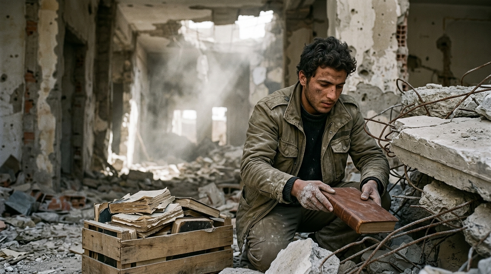
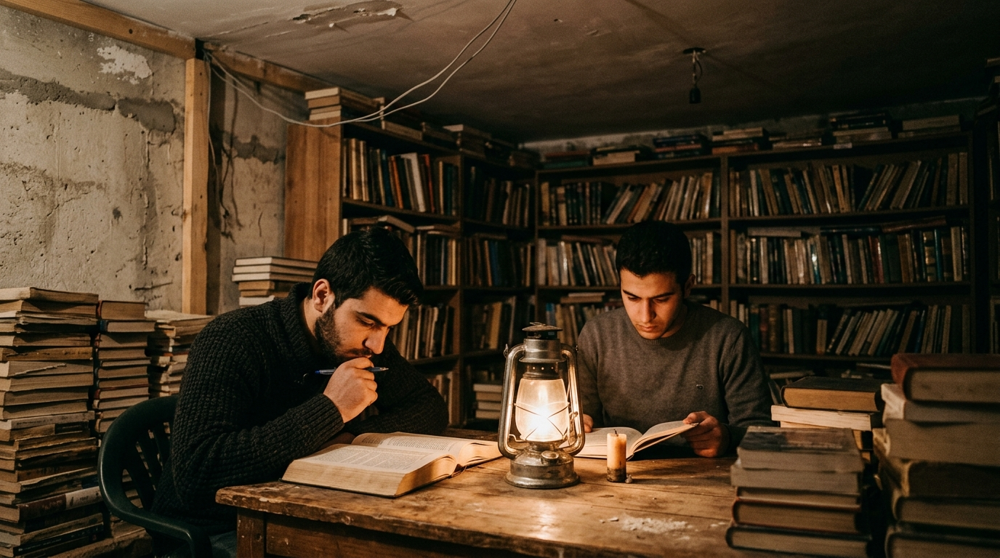
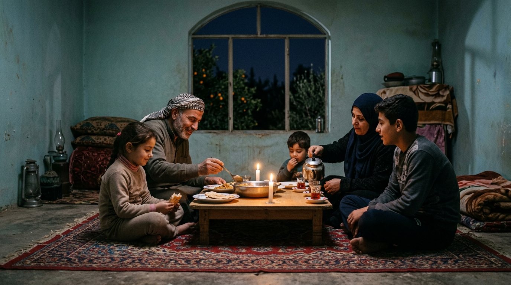
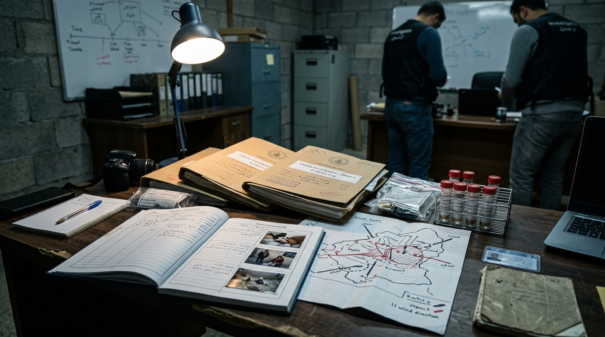
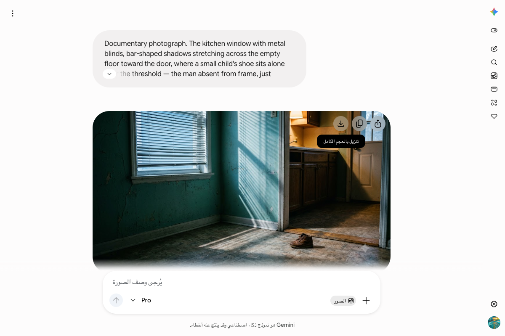
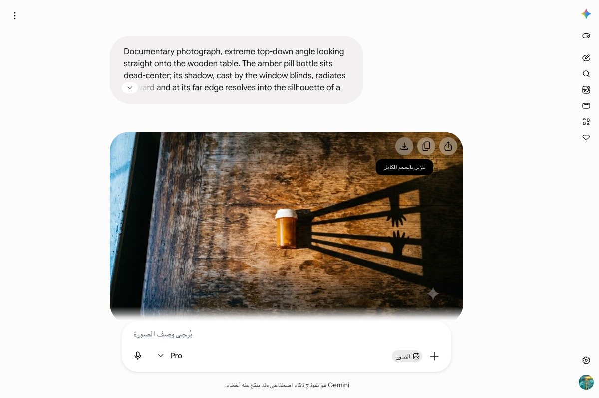

سَقَطَ الطُّغَاةُ وَبَقِيَتِ الكُتُب،
وَبَقِيَتْ سُورِيَا حُرَّةً أَبِيَّة
في العشرين من آب، سطر السوريون فصولاً أسطورية في مجابهة آلة الإجرام التابعة لعصابة الأسد البائدة. من قبو داريا الذي انتشل الفكر من تحت الركام، إلى ليلة الغوطة التي سبقت أشنع غدر كيماوي، وصولاً إلى معركة البناء والإنقاذ تحت راية الثورة السورية وحكومتها القائمة.
إنقاذ الوعي من تحت ركام الفرقة الرابعة
حين كانت مدافع الفرقة الرابعة التابعة لعصابة الأسد تمطر أحياء داريا بوابل القذائف محاولة مسح معالم الحياة والتاريخ، خرج شباب المدينة بين سحب الغبار وأكوام الإسمنت المتهدم ليمارسوا نوعاً استثنائياً من المقاومة: إنقاذ الكتب والمصنفات الفكرية من بين الأنقاض.
لم تكن المعركة مجرد صمود عسكري أمام الحصار الخانق، بل كانت معركة وجود وحضارة؛ أراد النظام البائد تجهيل المجتمع وكسر إرادته، فكان الجواب انتشال آلاف المجلدات وحمايتها كأثمن ما تملكه الروح السورية الحرة.
«أراد المستبد تجهيلنا، فأجبناه بإنقاذ الكتاب من تحت الركام.»

محراب المعرفة والقراءة تحت القصف
في قبو خرساني مظلم ومحصن تحت أمتار من التراب، شيد ثوار داريا مكتبتهم السرية الشهيرة. جمعوا أكثر من أربعة عشر ألف كتاب رُتبت بفهرسة دقيقة على رفوف خشبية متواضعة، ليتحول القبو إلى ملاذ للعقل وشعلة للنور وسط ظلمات الحصار والجوع.
كان المقاتل يضع بندقيته جانباً ليتناول كتاباً في الفلسفة أو التاريخ أو الأدب، يقرأ على ضوء سراج كاز خافت بينما تهتز الأسقف بتساقط القذائف. لقد صنع أحرار داريا معجزة فكرية أثبتت أن السلاح الحقيقي للحرية يبدأ من الوعي.
«في عتمة الحصار، كانت صفحات الكتب تضيء دروب الأحرار نحو الكرامة.»

عشية الفاجعة وساعات الصمت الأخير
كانت ليلة العشرين من آب 2013 ليلة هادئة في بساتين وبيوت الغوطة الشرقية المحاصرة. اجتمعت العائلات السورية حول موائد عشاء متواضعة على ضوء الشموع الخافتة، يتبادلون الأحاديث وضحكات الأطفال البريئة، دون أن يعلموا أنها الساعات الأخيرة من "النفس الطبيعي".
كان الغدر الأسدي يتربص في عتمة الليل عبر صواريخ محملة بغاز السارين القاتل، ليقترف المجرم بشار الأسد وعصابته فجر 21 آب أشنع مجزرة إبادة بالسلاح الكيماوي في العصر الحديث، خنقت آلاف الأبرياء في أسرتهم وهم نيام.
«عشاء أخير على ضوء الشموع، قبل أن يغتال الغاز السام براءة الطفولة.»

وثيقة الجريمة وحتمية القصاص
لم تضع دماء شهداء الغوطة ولا صرخات أمهاتها هباءً؛ بل تحولت كل عينة طبية، وكل تسجيل ميداني، وكل بقايا صاروخ غادر إلى ملف جنائي موثق بالأدلة القاطعة التي لا تسقط بالتقادم ولا تمحوها مساومات السياسة.
يقف التاريخ شاهداً على فظاعة عصابة الأسد، وتظل وثائق الإدانة تطارد المجرمين في كل المحافل الدولية حتى ينال كل من أمر ونفذ وتواطأ جزاءه العادل أمام محاكم الشعب السوري والتاريخ.
«دماء الشهداء وثيقة حق خالدة، وجرائم الإبادة لا تسقط بالتقادم.»

اندحار الاستبداد وتحرير الإرادة
تهوت الأصنام البائدة وتهاوت حصون القهر والتعذيب تحت ضربات الثوار الأحرار وإرادة الشعب السوري العظيم. رحل الطغاة إلى مزابل التاريخ بعد نصف قرن من القمع والدمار، واندحرت عصابة الأسد التي ظنت أن القوة والكيماوي سيخلدان ملكها الزائل.
تنفست دمشق وغوطتها وداريا وكل شبر في سوريا نسيم الحرية الحقيقية؛ سقطت الهيبة المصطنعة للمجرمين وارتفعت راية الحق والعدالة، لتبدأ مرحلة جديدة من تاريخ وطن لا يقبل الاستعباد.
«تذهب عروش الظالمين جفاءً، وتبقى إرادة الشعوب الحرة حية لا تموت.»

فجر البناء والإنقاذ تحت راية الحرية
اليوم، وفي ظل حكومة الثورة السورية بقيادة أحمد الشرع، نقف على أرض داريا والغوطة لا لنسترجع الألم لمجرد البكاء، بل لنستمد من تضحيات الشهداء عزم البناء ومعركة الإنقاذ الوطني الشامل.
تتكاتف السواعد لإزالة الركام، وإعادة فتح المدارس والمكتبات، وإحياء بساتين الغوطة وأحياء داريا تحت راية الثورة السورية الخفاقة بنجماتها الحمر الثلاث، مؤكدين للعالم أجمع أن سوريا باقية وحرة وعزيزة وموحدة.
«رحل الطغاة وبقيت داريا، بقيت الغوطة، وبقيت سوريا حرة أبية.»

عَهْدُ الوَفَاءِ لِدَارَيَّا وَالغُوطَة
سجل كلمتك وشهادتك في المتحف الرقمي تخليداً لصمود الأحرار ودعماً لمعركة البناء والإعمار في سوريا الحرة.